✔ README.md e assets/terminal-session.svg gerados e prontos.
Sequência completa dentro da janela: boot → avatar ASCII → whoami → sobre-mim → stack (logos) → contact → exit, com "limpeza de tela" entre blocos, em loop infinito (SVG + SMIL — funciona no README do GitHub).
Para usar: crie um repositório com o nome mvartkkj (repositório de perfil), suba o README.md e a pasta assets/. Os cards de stats já apontam pro seu usuário.